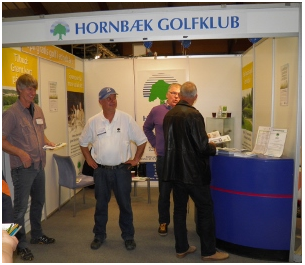

<div class="pages">
  <div data-page="mentorordningen" class="page navbar-fixed toolbar-fixed" >
    <div class="navbar">
      <div class="navbar-inner">
        <div class="left">
          <a href="#" class="link back icon-only"><i class="icon icon-back"></i></a>
          <!-- <a href="#" class="back link icon-only"><i class="icon icon-back"></i></a> -->
        </div>
        <div class="center">Mentorordningen</div>
        <!-- <div class="right"></div> -->
        <div class="right">
        </div>
      </div>
    </div>
    <div class="page-content" style="padding-top:45px;">
       <div class="content-block">
          <p>Mentorer</p>
          <p>Har du endnu ikke fået "bagmærket" og ikke har mulighed for at deltage i begyndermatcherne om tirsdagen, kan du få tildelt en Mentor, som - sammen med dig - vil hjælpe dig med at booket tid og gå med dig ud og spille på banen med henblik på at du kan erhverve dit bagmærke. En mentor er et klubmedlem som har max. HCP 36,0 og som - på frivillig basis - tilbyder at hjælpe nye golfere igang med golfspillet.</p>
          <center></center>
          <p>Mentorlisten er opslået i Sekretariatet, som også kan være behjælpelig med at sætte dig i forbindelse med en Mentor.</p>
        </div>
    </div>
    </div>
    </div>
  </div>
</div>
